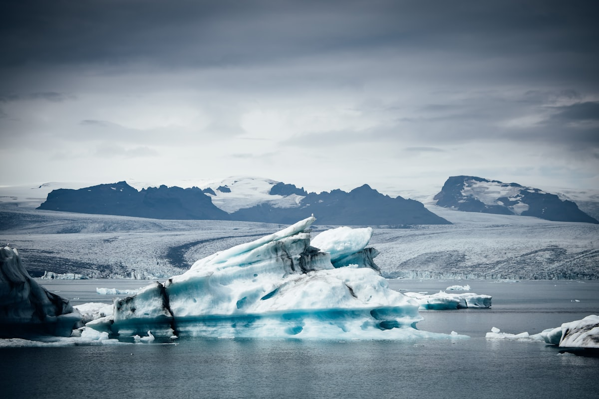
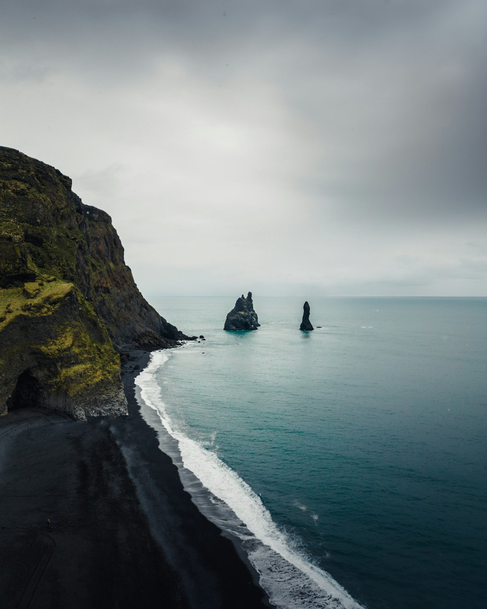
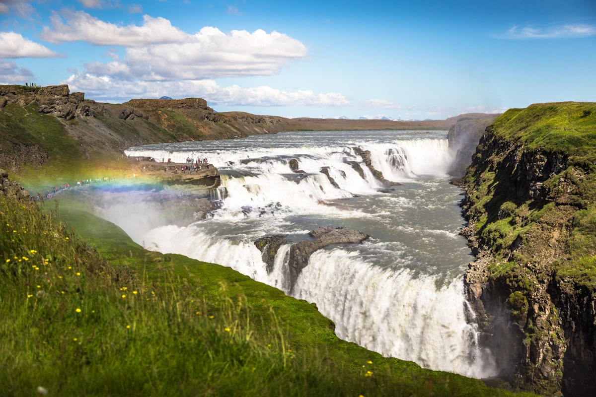
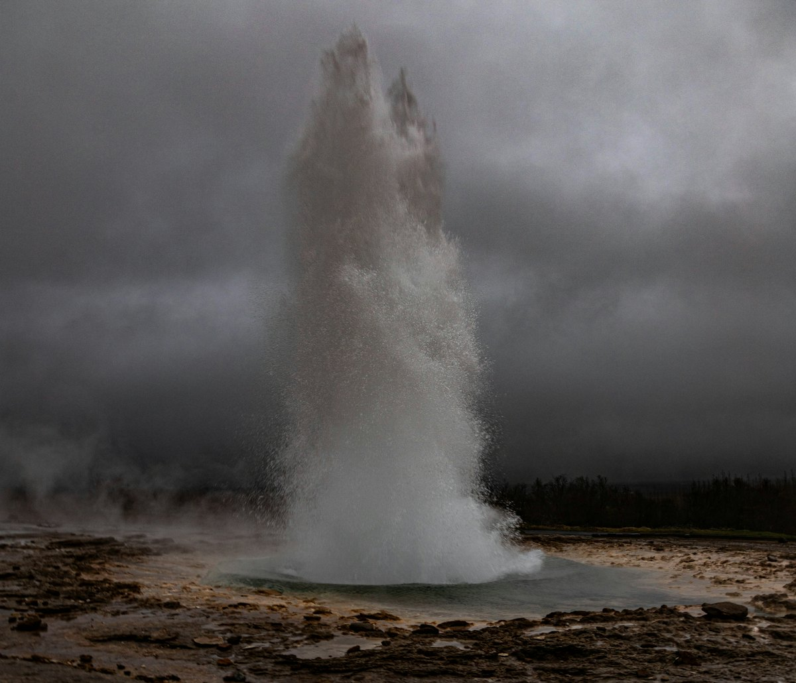
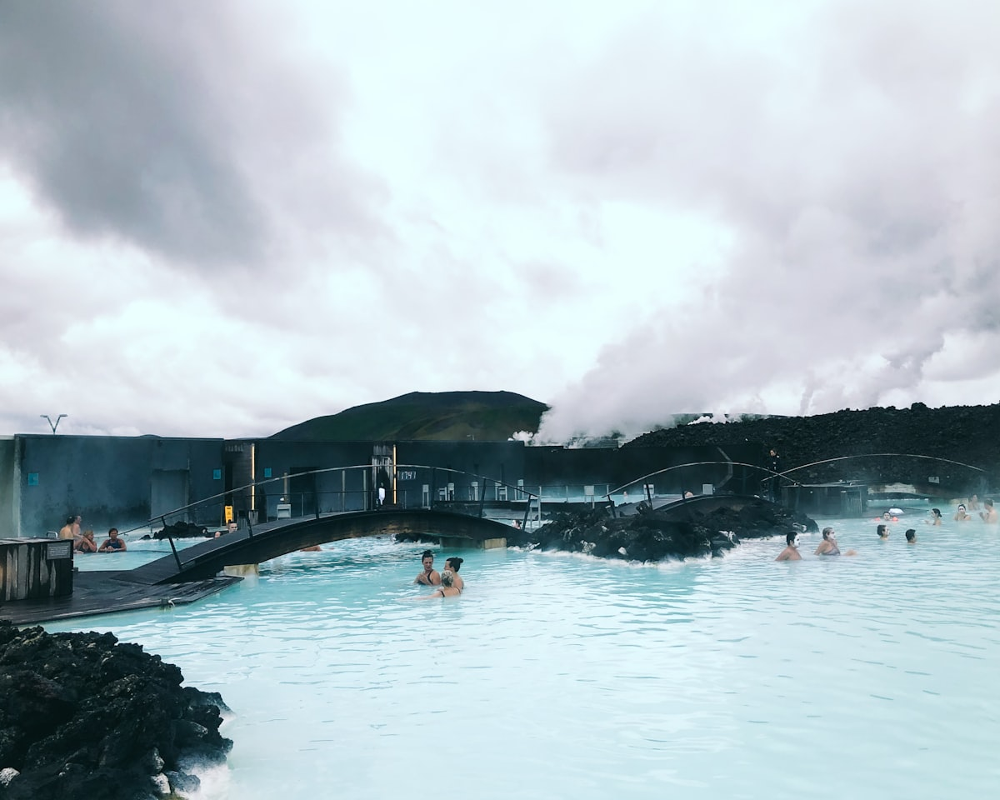
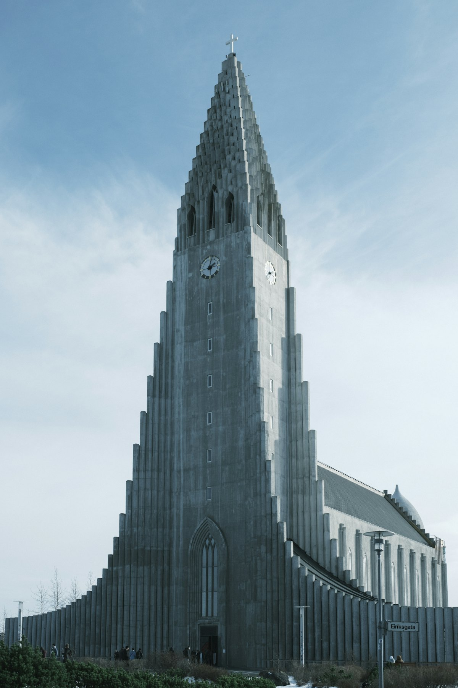
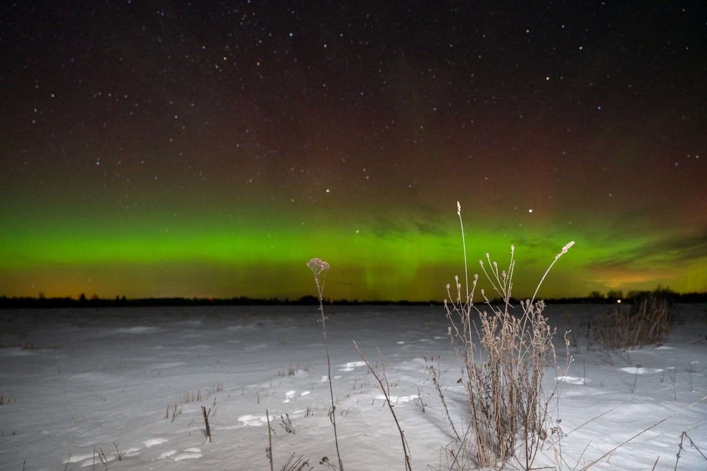
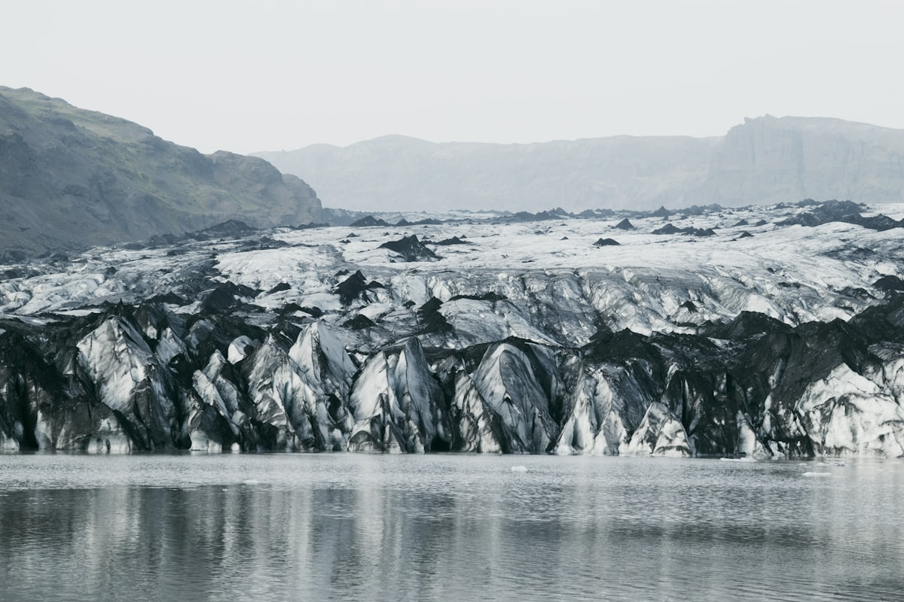

| 事项 | 结论 |
|---|---|
| 事项 | 结论 |
| 签证（最关键） | 中国护照赴冰岛须提前办理申根签证（VFS 签证中心递交，签证费 730 元+服务费 242 元），180 天内最多停留 90 天，建议提前 2 个月递交 |
| 时差 | -8 小时（冰岛 UTC+0，北京 UTC+8），抵达当天按冰岛时间作息快速倒时差 |
| 电源 | 230V 电压，C/F 型欧标插座（两圆脚），需带转换插头 |
| 货币 | 冰岛克朗（ISK），1 元人民币 ≈ 19 ISK；信用卡（Visa/Mastercard）全程可用，几乎不用现金 |
| 汇率提示 | 蓝湖等热门项目为动态定价，随日期/时段浮动，预订时以官网价格为准 |
| 推荐方案 | 雷克雅未克 2 天（含蓝湖）+ 黄金圈 2 天 + 南岸 3 天（冰河湖/冰川徒步）+ 返程 1 天 |
| 预算（人均） | 经济 15000–22000 ／ 标准 28000–40000 ／ 舒适 60000–85000（人民币，含机票） |
| 三件提前事 | ① 办申根签证 ② 订蓝湖温泉时段（提前 1–2 个月）③ 租车全险 + 沿途住宿提前 2 个月 |
以下为 9 天 8 晚的推荐节奏：先在雷克雅未克适应时差，再自驾黄金圈与南岸，最后一天按季节选择极光（9 月–3 月）或观鲸（4 月–10 月）。每日主景点 ≤2 个，自驾路段每日不超过 3 小时。
| 日期 | 行程 | 过夜地 | 主题 |
|---|---|---|---|
| D1 抵雷克雅未克 | 北京✈雷克雅未克（经哥本哈根/转机约 15–18h），入住市区，老港区看日落 | 雷克雅未克 | 抵达+倒时差 |
| D2 | 哈尔格林姆斯大教堂 → 哈帕音乐厅 → 彩虹街 → 珍珠楼日落 | 雷克雅未克 | 城市漫游 |
| D3 | 蓝湖温泉（需提前预约）→ 下午取租车 + 超市补给 | 雷克雅未克 | 温泉日 |
| D4 | 黄金圈：辛格维利尔国家公园 → 盖歇尔间歇泉 → 黄金瀑布 | 黄金圈/塞尔福斯 | 黄金圈 D1 |
| D5 | 凯瑞斯火山口 / 丝浮拉浮潜（可选）→ 沿 1 号公路南下维克镇 | 维克 | 黄金圈 D2 |
| D6 | 塞里雅兰瀑布 → 斯科加瀑布 → 雷尼斯黑沙滩 | 维克 | 瀑布日 |
| D7 | 瓦特纳冰川徒步（斯卡夫塔山）→ 杰古沙龙冰河湖 + 钻石沙滩 | 霍夫/斯卡夫塔山 | 冰川日 |
| D8 | 南岸回程雷克雅未克，晚上极光团（冬季）/ 市区自由（夏季） | 雷克雅未克 | 回城日 |
| D9 返程 | 上午观鲸（夏季）/ 自由活动（冬季）→ 雷克雅未克✈北京 | — | 收尾 |
以下为 9 天全程的逐小时执行时间线，可当作「当天打开照着走」的清单。标注 ※ 的可选项视体力与天气取舍。
| 时间 | 事项 |
|---|---|
| 03:30–05:30 | 北京首都机场值机。2026.10.26 起国航 CA807 经哥本哈根赴雷克雅未克（约 15h45m，中途停留 2h15m 不换机）；此前需经欧洲城市转机 18h+ |
| — | 飞行途中尽量休息；冰岛与北京时差 -8h，白天到达后多晒太阳，按冰岛时间作息加速倒时差 |
| 11:15–13:00 | 抵达凯夫拉维克国际机场（KEF）：办入境，ATM 取 2000–3000 ISK 备用现金，买手机 eSIM/机场卡 |
| 13:30–15:00 | 乘 Flybus 机场大巴（约 50 分钟，单程约 4900 ISK）或取租车进市区，入住雷克雅未克酒店/民宿 |
| 16:00–18:00 | 老港区散步：太阳航海者雕塑 + 海滨落日；Bónus 超市采购早餐与水，晚餐尝羊肉汤（kjötsúpa） |
| 时间 | 事项 |
|---|---|
| 08:30–10:30 | 哈尔格林姆斯大教堂：冰岛最大教堂，仿玄武岩柱造型；登顶电梯约 1500 ISK，俯瞰彩色屋顶全城 |
| 10:30–12:00 | 哈帕音乐厅（Harpa，免费）：玻璃蜂窝幕墙 + 海港景观，建筑必打卡 |
| 12:00–13:00 | 午餐：Bæjarins Beztu 热狗（克林顿同款，约 600 ISK）或 Skyr 酸奶 + 三明治 |
| 13:00–16:00 | 彩虹街 + Laugavegur 主街：羊毛衣 lopapeysa、冰岛设计店、Icelandic Handknitting Association 买毛衣 |
| 16:30–18:30 | 珍珠楼 Perlan（约 5990 ISK 含冰洞/4D 展）：穹顶玻璃观景台看日落 |
| 时间 | 事项 |
|---|---|
| 09:00–13:00 | 蓝湖温泉 Blue Lagoon（Comfort 从 11990 ISK 起，动态定价）：乳蓝硅泥温泉+桑拿，含毛巾/硅泥面膜/水中饮品；必须官网提前 1–2 个月预约时段 |
| 13:00–14:00 | 蓝湖 Lava 餐厅午餐，或回市区吃 |
| 14:30–16:00 | 市区租车点取车：建议 2WD + 全险（CDW/SCDW/碎石险/挡风玻璃险），夏季环 1 号公路够用，冬季换 4x4 |
| 16:30–18:00 | Bónus/Krónan 超市大采购：面包、酸奶、熟食、水（冰岛自来水可直饮），为自驾 4 天备餐 |
| 19:00 | 晚餐：老港鱼市场尝冰岛小龙虾（可选），或民宿自炊 |
| 时间 | 事项 |
|---|---|
| 08:30 | 雷克雅未克出发，沿 36 号公路向东（约 50 分钟） |
| 09:30–12:00 | 辛格维利尔国家公园（免费）：欧美两大板块裂谷 + 世界最早的议会旧址，可走裂谷步道 |
| 12:00–13:00 | 盖歇尔地热区周边餐厅午餐 |
| 13:00–15:00 | 盖歇尔间歇泉（免费）：Strokkur 每 5–10 分钟喷发一次，最高 20m；周边彩色地热区与硫磺泉眼 |
| 15:30–17:30 | 黄金瀑布 Gullfoss（免费）：双层阶梯瀑布高 32m，晴天常见彩虹 |
| 18:00 | 入住黄金圈/塞尔福斯民宿小木屋，自炊晚餐 |
| 时间 | 事项 |
|---|---|
| 08:30–10:00 | 凯瑞斯火山口 Kerið（约 600 ISK）：750 米宽碧绿火山湖，环湖步道 20 分钟 |
| 10:00–12:00 | 可选：丝浮拉 Silfra 浮潜（约 23000 ISK 含干衣装备）：板块裂缝间能见度超 100m 的冰川水，需提前预订；不玩则直接南下 |
| 12:30–14:00 | 塞尔福斯（Selfoss）午餐：Icelandic Street Food 羊肉汤/龙虾汤配无限面包 |
| 14:30–17:30 | 沿 1 号公路南下：途经埃亚菲亚德拉冰盖（2010 年火山喷发）观景台，远眺冰川与熔岩平原 |
| 18:00 | 抵达维克镇（Vík），入住民宿，晚餐镇上餐厅 |
| 时间 | 事项 |
|---|---|
| 08:30–10:00 | 塞里雅兰瀑布 Seljalandsfoss（免费）：60m 高，可绕到瀑布背后（带雨衣，步道湿滑） |
| 10:30–11:30 | 斯科加瀑布 Skógafoss（免费）：60m 宽 25m 高，晴天常挂彩虹，可爬 400 级侧梯登顶俯瞰海岸 |
| 12:00–13:00 | 斯科加餐厅午餐（Fish & Chips）或自备干粮 |
| 13:30–16:00 | 雷尼斯黑沙滩 Reynisfjara（免费）：玄武岩柱 + 雷尼斯岩海蚀柱，绝对不要靠近水线，杀人浪随时拍岸 |
| 16:30 | 回维克镇休息，傍晚可选迪霍拉里角 Dyrhólaey 看海鹦（夏季） |
| 时间 | 事项 |
|---|---|
| 08:00 | 维克→斯卡夫塔山 Skaftafell（1 号公路向东约 1.5h），到访客中心集合 |
| 09:30–13:00 | 瓦特纳冰川徒步（约 23000 ISK 起，含冰爪/头盔/向导）：蓝冰与冰裂缝间徒步 2.5–3.5h，需提前官网预订，全程跟团 |
| 13:00–14:30 | 斯卡夫塔山游客中心简餐或自备午餐 |
| 15:00–18:00 | 杰古沙龙冰河湖 Jökulsárlón（免费）+ 钻石沙滩（马路对面）：海豹+漂浮冰山；可选水陆两栖船约 6900 ISK |
| 19:00 | 入住霍夫/斯卡夫塔山附近小屋，自炊晚餐 |
| 时间 | 事项 |
|---|---|
| 08:30–12:00 | 回程沿 1 号公路向西，可顺路看 Fjallsárlón 冰川湖（比杰古沙龙小但人少）或史托克角冰川观景台 |
| 12:00–13:00 | 维克或沿途小镇午餐 |
| 13:30–17:00 | 继续西行回雷克雅未克，还车前加油（冰岛油价约为国内 1.5–2 倍） |
| 18:00–20:00 | 晚餐：冰岛热狗 + 羊肉汤收官，买伴手礼（羊毛衣、火山盐、蓝湖面膜） |
| 21:00–24:00 | 冬季（9 月–3 月）：报极光团出海或郊区追光（约 1000–1300 元/人，含热饮/连体服）；夏季无暗夜，极光基本看不到 |
| 时间 | 事项 |
|---|---|
| 09:00–12:00 | 夏季（4–10 月）：老港观鲸（约 3h，约 13000 ISK，含防水连体衣）：法克萨湾看座头鲸/小须鲸/海豚，看不到可免费改期；冬季可选市区自由购物/美术馆 |
| 12:00–13:00 | 午餐：雷克雅未克最后一顿，Skyr 酸奶 + 热狗 |
| 13:30–15:00 | 退房，Flybus 或自驾还车后乘机场大巴前往凯夫拉维克机场 |
| 16:00–19:00 | 机场免税购物（≥4000 ISK 可退税）、安检登机，返程经哥本哈根/转机约 15–18h |
| — | 抵达北京，结束 9 天冰火之旅 |
必去（必去）/ 顺路（顺路）/ 可跳过（可跳过）。

必去
必去
必去
必去
必去
顺路
必去图片为 Unsplash 主题图（杰古沙龙冰河湖、黑沙滩、黄金瀑布、间歇泉、蓝湖、大教堂、极光、冰川均为冰岛实景），用于页面配图。更多免费景点：辛格维利尔国家公园、塞里雅兰瀑布、斯科加瀑布、钻石沙滩。
点击左侧节点可在地图上定位；点击地图 marker 会高亮对应节点。坐标为 WGS-84 转 GCJ-02 纠偏后标注。
以下为单人、不含购物的估算，人民币计价；出发地基准北京。汇率按 1 元人民币 ≈ 19 冰岛克朗（ISK）估算。冰岛是全球消费最贵的目的地之一，往返机票按 2026.10 起国航经停与欧洲转机综合估算。
| 项目 | 经济（15000–22000） | 标准（28000–40000） | 舒适（60000–85000） |
|---|---|---|---|
| 往返机票 | 转机 6000–8000 | 国航经停/灵活 9000–12000 | 公务舱/灵活 18000–25000 |
| 住宿（8 晚） | 青旅/民宿 4500–6500 | 中档酒店 11000–15000 | 精品酒店/度假屋 26000–35000 |
| 交通（租车+油费+过路） | 2WD 拼租 3000–4500 | 2WD/4x4 全险 5500–8000 | 4x4 全险+私导 11000–16000 |
| 餐饮（9 天） | 超市+简餐 2500–3500 | 正常下馆子 5000–7000 | 龙虾/米其林 12000–17000 |
白天仅 4–6 小时，行程整体压紧：蓝湖可以不放上午、冰河湖与钻石沙滩合并半天；必加冰洞探险与极光团。黑沙滩风大浪高，观鲸基本没有，D9 改为黄金圈补漏或市区购物。冬季自驾建议 4x4，租车加防滑轮胎。
白天近 21 小时，每天可以多排 1–2 个点：D6 可加迪霍拉里角看海鹦、D7 可加史托克角或 Fjallsárlón。夏季观鲸、冰川徒步、船游全开，但极光看不到，且住宿是全年最贵、最难订，务必提前 3 个月锁定。
| 方式 | 时长 | 参考价（往返） | 备注 |
|---|---|---|---|
| 国航经停（2026.10 起） | 约 15h45m（哥本哈根停留 2h15m 不换机） | 7000–12000 元 | CA807 每周一/四/六，行李直挂，经济舱单程 3230 元起 |
| 欧洲转机 | 18–30h | 8000–14000 元 | 经哥本哈根/赫尔辛基/法兰克福等，北欧航空/芬航/汉莎 |
| 区域 | 价格/晚 | 优点 | 短板 |
|---|---|---|---|
| 雷克雅未克市区 | 青旅 300–600 / 酒店 1000–2500 元 | 吃喝玩乐集中，离机场巴士近 | 旺季紧张，需提前 2–3 个月 |
| 凯夫拉维克机场区 | 民宿 400–800 元 | 赶早班机/深夜到达方便 | 距市区 45 分钟，无景点 |
| 黄金圈/塞尔福斯 | 民宿小木屋 600–1500 元 | 自驾黄金圈省时间 | 旺季房源少，餐厅少 |
| 维克镇 | 民宿 600–1500 元 | 南岸枢纽，黑沙滩日落 | 镇上设施有限，餐饮贵 |
| 斯卡夫塔山/霍夫 | 小屋 700–1600 元 | 冰川徒步/冰河湖近 | 偏远，需自备干粮 |
| 赫本 Höfn | 民宿 700–1600 元 | 龙虾汤出名，东峡湾起点 | 距冰河湖 1h，往返较远 |